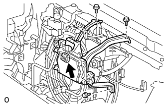

ТРОС УПРАВЛЕНИЯ ЗАМКОМ КАПОТА В СБОРЕ > СНЯТИЕ |
| 1. СНИМИТЕ ВЕРХНЕЕ УПЛОТНЕНИЕ КРОНШТЕЙНА РАДИАТОРА |
Освободите 13 фиксаторов и снимите верхнее уплотнение кронштейна радиатора.
| 2. СНИМИТЕ РЕШЕТКУ РАДИАТОРА |
 |
Наклейте защитную клейкую ленту вокруг решетки радиатора.
Освободите 2 фиксатора и выверните 2 болта.
Расцепите 8 захватов и снимите решетку радиатора.
| *1 | Защитная клейкая лента |
| 3. СНИМИТЕ ДАТЧИК РАДАРА МИЛЛИМЕТРОВОГО ДИАПАЗОНА В СБОРЕ (для моделей с динамической радарной системой круиз-контроля) |
|  |
Отсоедините разъем датчика.
Выверните 3 болта и снимите датчик.
| 4. СНИМИТЕ ЗАЩИТНЫЙ ЭЛЕМЕНТ РЫЧАГА РАЗБЛОКИРОВКИ ЗАМКА КАПОТА |
 |
Освободите 2 захвата и 2 направляющих и снимите защитный элемент рычага разблокировки замка капота.
| 5. СНИМИТЕ НИЗКОЧАСТОТНЫЙ ЗВУКОВОЙ СИГНАЛ В СБОРЕ (для моделей с левосторонним рулевым управлением) |
 |
Отсоедините разъем.
| *1 | Часть |
Выверните болт и снимите низкочастотный звуковой сигнал.
| 6. СНИМИТЕ ВЫСОКОЧАСТОТНЫЙ ЗВУКОВОЙ СИГНАЛ В СБОРЕ (для моделей с левосторонним рулевым управлением) |
|
Отсоедините разъем.
| *1 | Часть |
Выверните болт и снимите низкочастотный звуковой сигнал.
| 7. СНИМИТЕ КРЫШКУ ТРОСА УПРАВЛЕНИЯ ЗАМКОМ КАПОТА |
Выверните 2 винта.
| *A | Для моделей с левосторонним рулевым управлением |
| *B | Для моделей с правосторонним рулевым управлением |
Освободите захват и снимите крышку троса управления замком капота.
| 8. СНИМИТЕ ЗАМОК КАПОТА В СБОРЕ (для моделей с левосторонним рулевым управлением) |
 |
Выверните 3 болта.
Для моделей с выключателем освещения проема капота двигателя:
Отсоедините разъем.
| *A | Для моделей с выключателем освещения проема капота двигателя: |
Отсоедините трос управления замком капота и снимите замок капота в сборе.
| 9. СНИМИТЕ ЗАМОК КАПОТА В СБОРЕ (для моделей с правосторонним рулевым управлением) |
Выверните 3 болта.
Для моделей с выключателем освещения проема капота двигателя:
Отсоедините разъем.
| *A | Для моделей с выключателем освещения проема капота двигателя: |
Отсоедините трос управления замком капота и снимите замок капота в сборе.
| 10. СНИМИТЕ РЫЧАГ ФИКСАЦИИ КАПОТА В СБОРЕ |
Для моделей с левосторонним рулевым управлением:
Расцепите зажим, как показано на рисунке.
| *1 | Защита |
| *2 | Трос устройства блокировки топливной крышки |
| *3 | Трос управления замком капота |
| *4 | Хомут |
Освободите 3 захвата.
 |
Снимите трос управления замком капота в сборе и рычаг фиксации капота в сборе.
Для моделей с правосторонним рулевым управлением:
Освободите 3 захвата.
|
Снимите трос управления замком капота в сборе и рычаг фиксации капота в сборе.
| 11. СНИМИТЕ ТРОС УПРАВЛЕНИЯ ЗАМКОМ КАПОТА В СБОРЕ (для моделей с левосторонним рулевым управлением) |
С помощью отвертки освободите зажимы, как показано на рисунке.
Вытяните трос управления замком капота в сборе из моторного отсека и снимите его.
| *A | Со стороны моторного отсека | - | - |
| *1 | Трос управления замком капота | *2 | Стопор |
| 12. СНИМИТЕ ТРОС УПРАВЛЕНИЯ ЗАМКОМ КАПОТА В СБОРЕ (для моделей с правосторонним рулевым управлением) |
С помощью отвертки освободите зажимы, как показано на рисунке.
Вытяните трос управления замком капота в сборе из моторного отсека и снимите его.
| *A | Со стороны моторного отсека | - | - |
| *1 | Трос управления замком капота | *2 | Стопор |
| *3 | Шланг заднего стеклоомывателя | - | - |